For the anime fans:
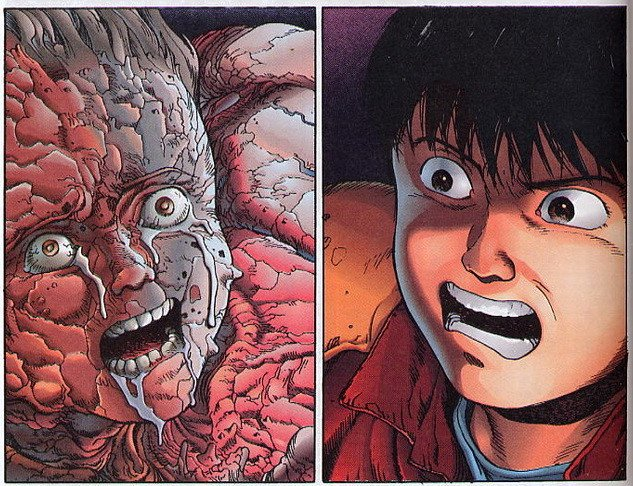 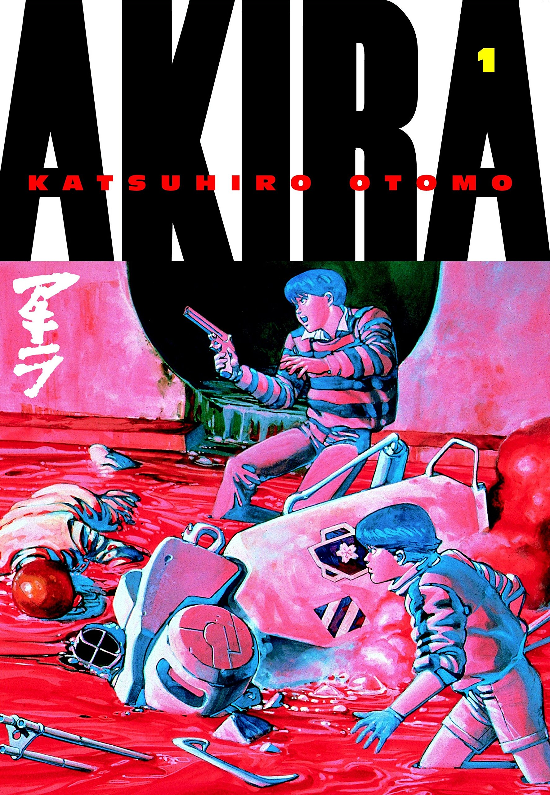AKIRA
1982, Katsuhiro Otomo
A cyberpunk action classic. AKIRA follows two members of a biker gang in 2020 Neo Tokyo. Following a freak accident, best friends Tetsuo and Kaneda are thrown into a world of supernatural horror, with the incoming tension of riots and war in the background. It's a story that with many twists and turns and a perfect introduction to Japanese manga.
BUY HERE 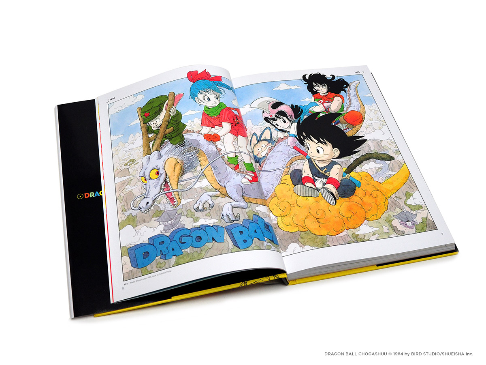 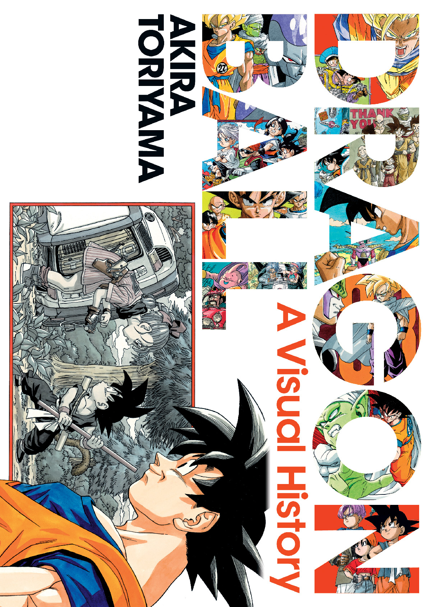Dragon Ball: A Visual History
2019, Akira Toriyama
A beautiful world filled with wonder and adventure. Before the anime and video games, the story of Goku began in the pages of manga magazines. In this book you'll find a collection of visuals from the story, with series creator Akira Toriyama providing insight into one of the most beloved franchises of all time.
BUY HEREFor the bookworms:
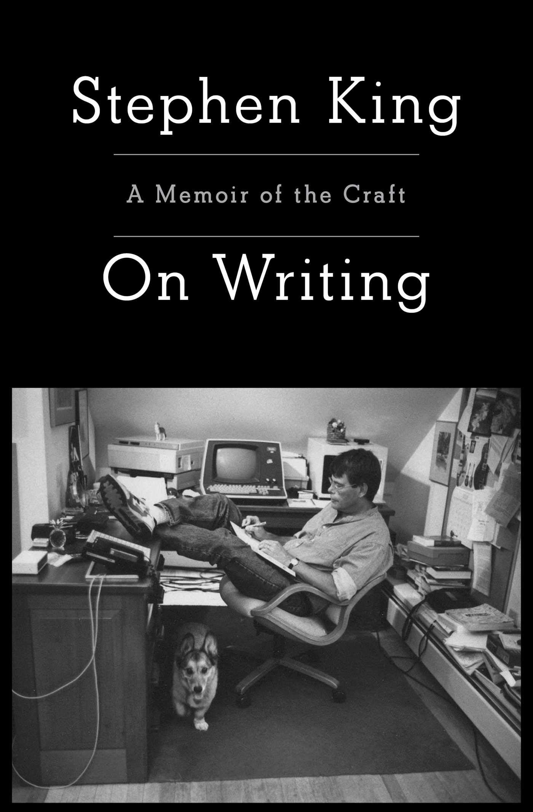On Writing: A Memoir of the Craft
2000, Stephen King
The methods of writing straight from the master himself. In this semi-autobiography, Stephen King recounts pivital moments from his life as he relates them to how life has shaped him into the author he is today. Tragic, funny, and comepletely insightful,On Writing is a must read.
BUY HERE 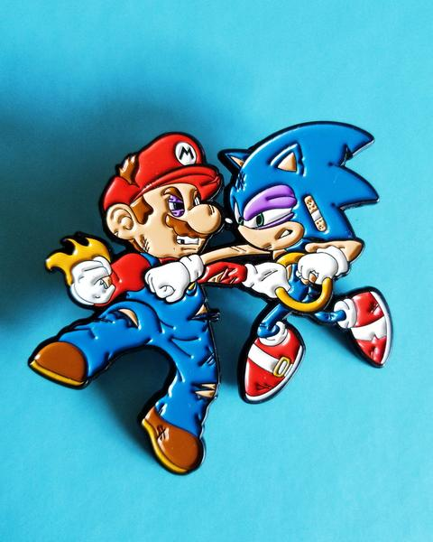 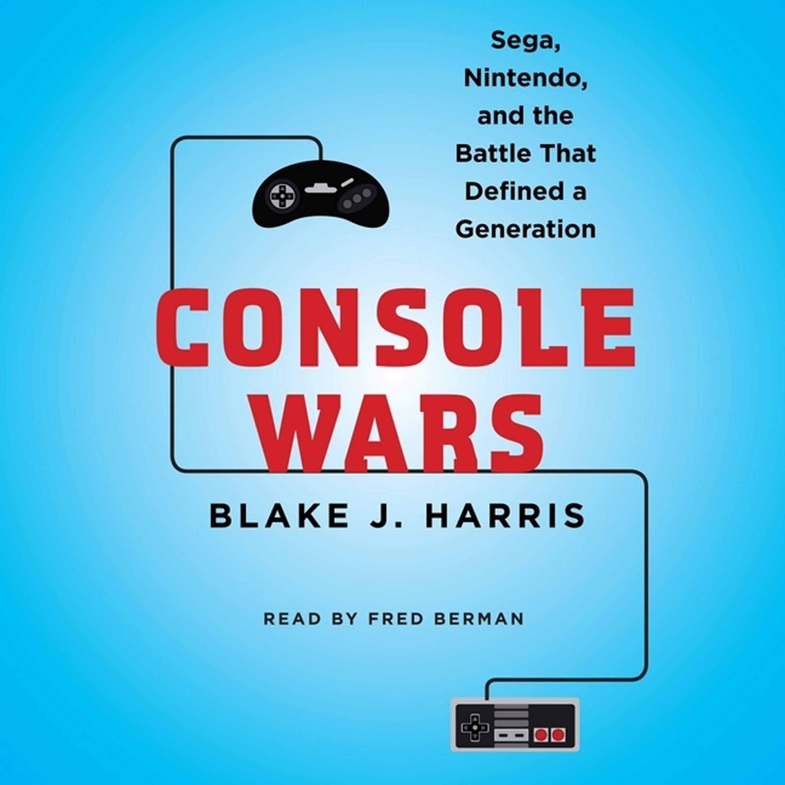Console Wars: Sega, Nintendo, and the Battle That Defined a Generation
2015, Blake J. Harris
The underdog versus the big boss. Console Wars follows the rise of Sega, then an up-and-coming game company that dares to challenge Nintendo, the only game company in the market. It's a story of rivalry and risk, giving insight into the development of some of the biggest projects and events in gaming history. An all-out brawl you wouldn't want to miss!
BUY HEREFor the fantasy lovers:
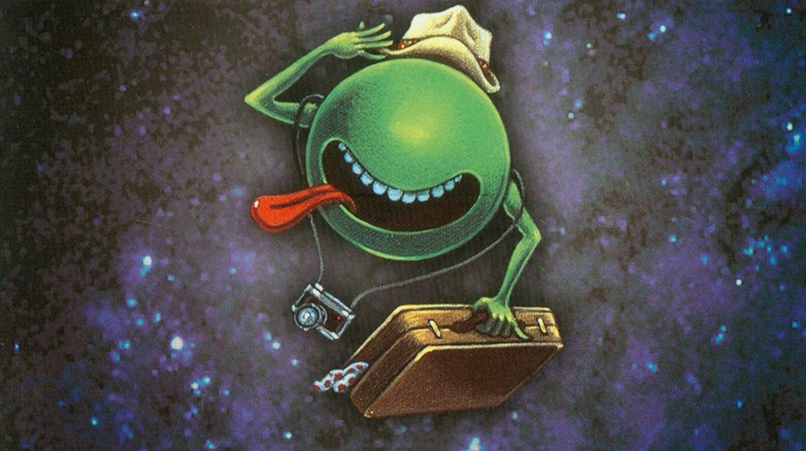 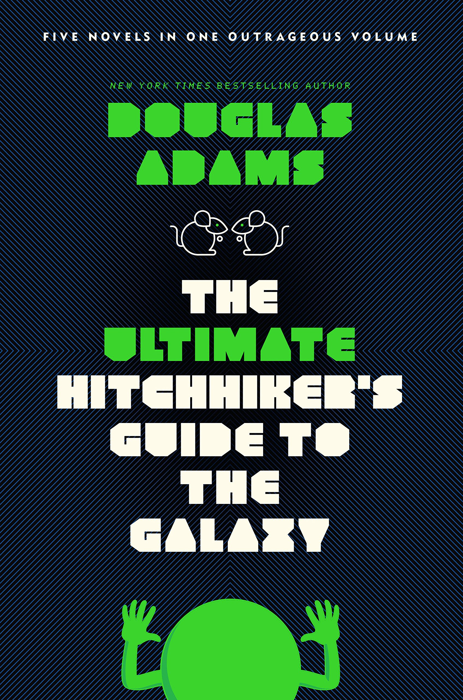The Ultimate Hitchiker's Guide to the Galaxy
2002, Douglas Adams
Seconds before the Earth is demolished for a galactic freeway, Arthur Dent is saved by Ford Prefect and begin a wild journey through time and space. All five volumes of this hilarious and imaginative classic from Douglas Adams are collected in one book. Irreverent escapism for the current times.
BUY HERE 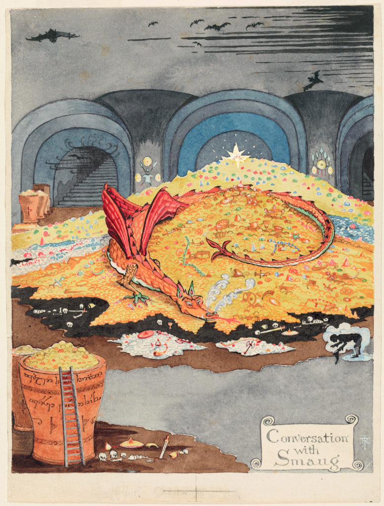
The Hobbit
1937, J.R.R. Tolkien
Join the humble Bilbo Baggins as he embarks on the adventure of a lifetime. Led by the mysterious wizard Gandalf and the league of lost Dwarves, they must go on a quest to slay the evil dragon Smaug and reclaim their stolen land. When it comes to fantasy, look no further than this beloved epic from J.R.R. Tolkien.
BUY HEREFor the comic book nerds:
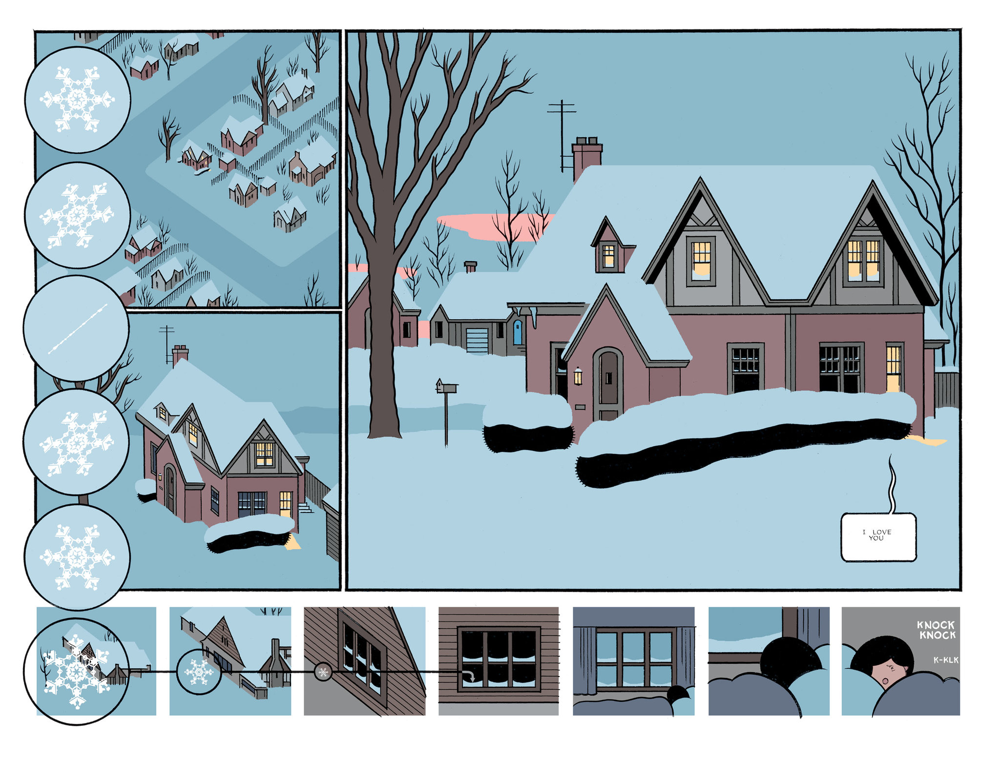 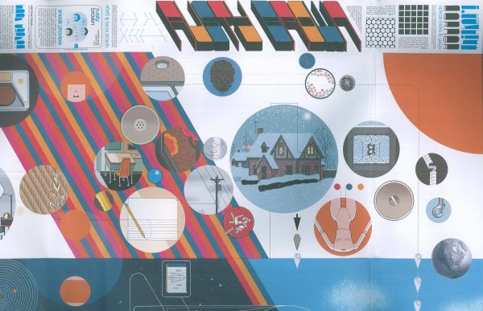Rusty Brown
2019, Chris Ware
A major graphic novel event more than 18 years in progress. From the brilliant author of Jimmy Corrigan: The Smartest Kid on Earth comes a fully interactive, full-color graphic novel of the time-space interrelationships of three complete consciousnesses in the first half of a single midwestern American day. It's trippy, bold, and incredible.
BUY HERE 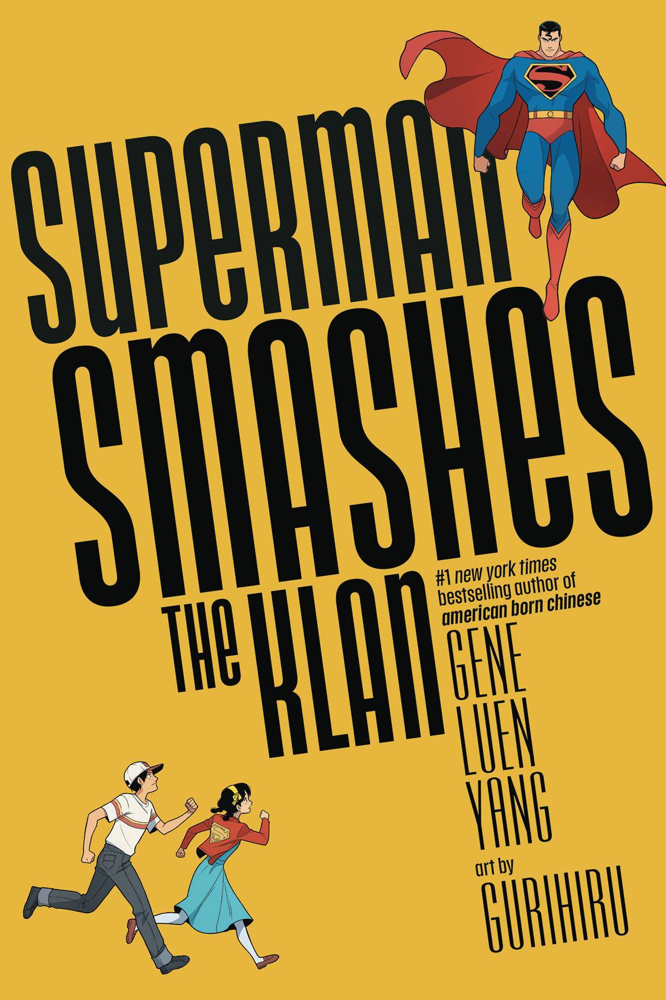
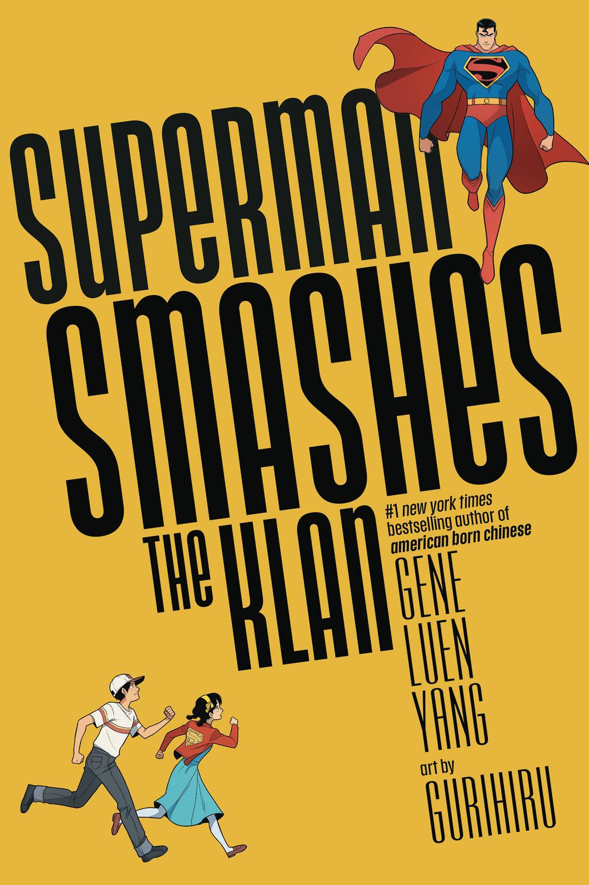
Superman Smashes the Klan
2019, Gene Luen Yang and Gurihiru
Inspired by the 1940s Superman radio serial "Clan of the Fiery Cross," comes a personal retelling of two different immigrants finding ways to belong in 1946 Metropolis. With the help of the Man of Steel, teenagers Tommy and Roberta must face their fears and get rid of the evil Klan of the Fiery Cross once and for all.
BUY HERE 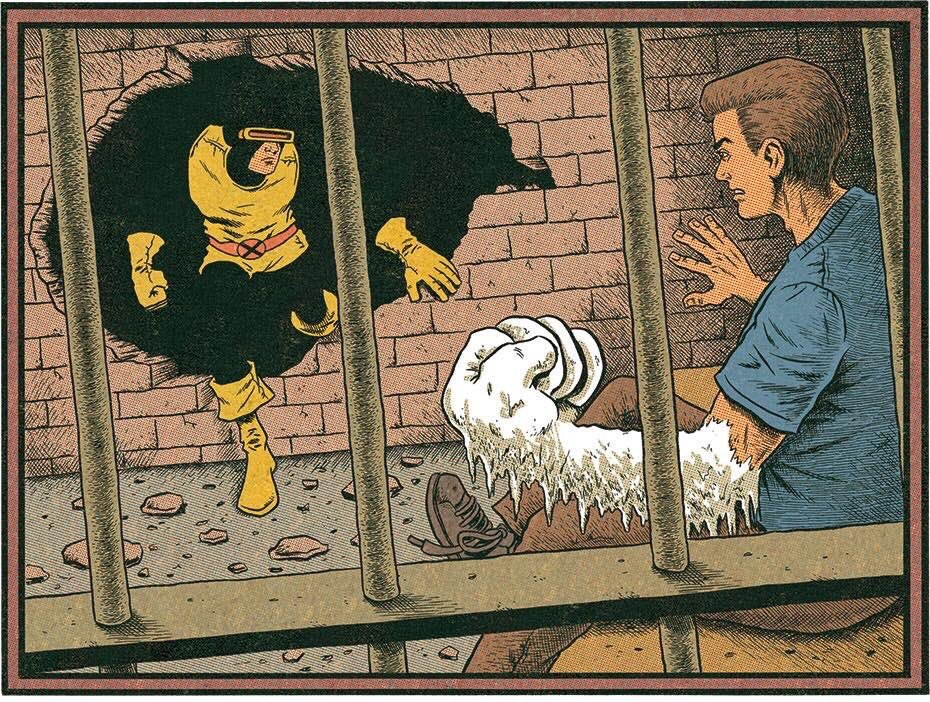 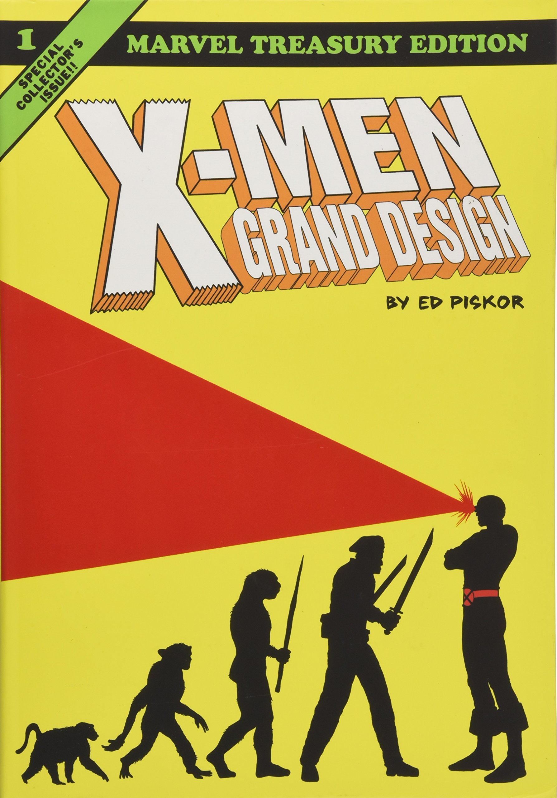X-Men: Grand Design
2019, Ed Piskor
"To me, my X-Men!" From critcally-acclaimed cartoonist Ed Piskor comes an epic old-school retelling of one of the greatest teams in comic book history. Gorgious illustrations and campy dialogue elevate the relevant thematics of the 1960s for a new generation.
BUY HERE